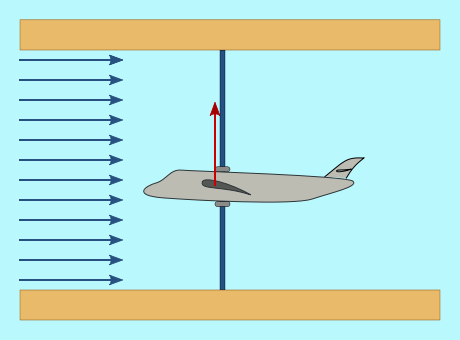

Há um efeito conhecido como "empatar"que causa uma diminuiçãolevantar, que faz as lâminas girar (verPorque é que as lâminas giram?). Este efeito ocorre quando um avião aumenta o ângulo de ataque de suas asas acima de um certo valor, como mostrado no gráfico a seguir.
|
 Neste caso, o ângulo das asas faz com que uma força ascendente aja sobre elas. Avetor vermelhoIndica a diferença entre esta força ascendente e o peso da aeronave.
|
Quando o ângulo é muito grande, a força ascendente é menor do que o peso da aeronave, devido à asa entrar em uma barraca. |
|
|
Quando o ângulo é pequeno, o fluxo laminar em torno da asa ou lâmina não é interrompido. |
|
|
Quando o ângulo excede um determinado valor, o fluxo laminar desaparece das áreas finais da lâmina, eturbulênciaaparece, reduzindo a área de superfície que contribui para levantar e, portanto, a força que "puxa" a lâmina para cima (levantamento), em comparação com o caso anterior. |
|
|
Também é possívelpara induzir turbulênciaalterando a direcção do ângulo de ataque. Esta técnica é usada na solução de controle chamada "Stall Activo." A vantagem aqui é que um ângulo muito menor é necessário do que no caso anterior para entrar em baia. |
Fig. 1
A figura seguinte mostra as curvas correspondentes à evolução da força de impulso vertical (levantamento) e na direção do vento (arrastar) como uma função de pitch. VerPorque é que as lâminas giram?para a relação entre essas forças e aquelas que determinam as forças rotacionais das lâminas e o empuxo na torre.
Observa-se que, ao entrar na baia, o comportamento muda, de modo que um aumento do vento corresponde a uma diminuição dolevantamentoforça e, portanto, na potência obtida do vento para girar o cubo. Também pode ser visto na curva vermelha que, ao entrar em baia, a força agindo sobre a torre aumenta. Por outras palavras,entrar no estábulo implica cargas adicionais na torre.
Fig. 2.
A figura seguinte mostra a curva de potência obtida do vento paraTurbinas eólicas de lança fixa, onde você pode ver o efeito de entrar parada sobre a energia. Nestes casos, a lâmina é projetada de modo que o nível de vento em que ocorre o travamento é ligeiramente superior à velocidade nominal do vento. Istoresposta passivaajuda acontrolabilidadeda turbina eólica: isto é, ela ajuda a evitar que ele desmorone quando o vento aumenta significativamente.

Fig. 3.
A figura a seguir mostra o resultado da utilização do stall com o "Stall Activo" técnica de controle, em que o pitch é usado para "forçar" baia com velocidades do vento mais baixas do que as da própria lâmina. Duas áreas podem ser vistas neste número:
a) na zona de vento abaixo da velocidade nominal do vento (cerca de 12 m/s no gráfico), o passo é mantido a 0o, o que corresponde a um Cp máximo (verCoeficiente Aerodinâmico);
b) acima da velocidade nominal do vento, quando precisamos reduzir a potência obtida do vento, a lâmina é ajustada em um pequeno ângulocontra o vento(sinal negativo do pitch). O valor absoluto deste ângulo diminui à medida que o vento aumenta, refletindo o mesmo fenômeno de baia vista em lâminas de ângulo fixo.
Fig. 4.
Aplicando este controle de passo, a característica Power vs. Curva de vento numa turbina eólica controlada porStall Activoé mostrado na figura seguinte.

Fig. 5.
Como pode ser visto comparando as Figuras 3 e 5, a produção com ventos acima do vento nominal melhora significativamente no caso de turbinas eólicas com ângulo de pitch variável e o "Stall Activo"method.